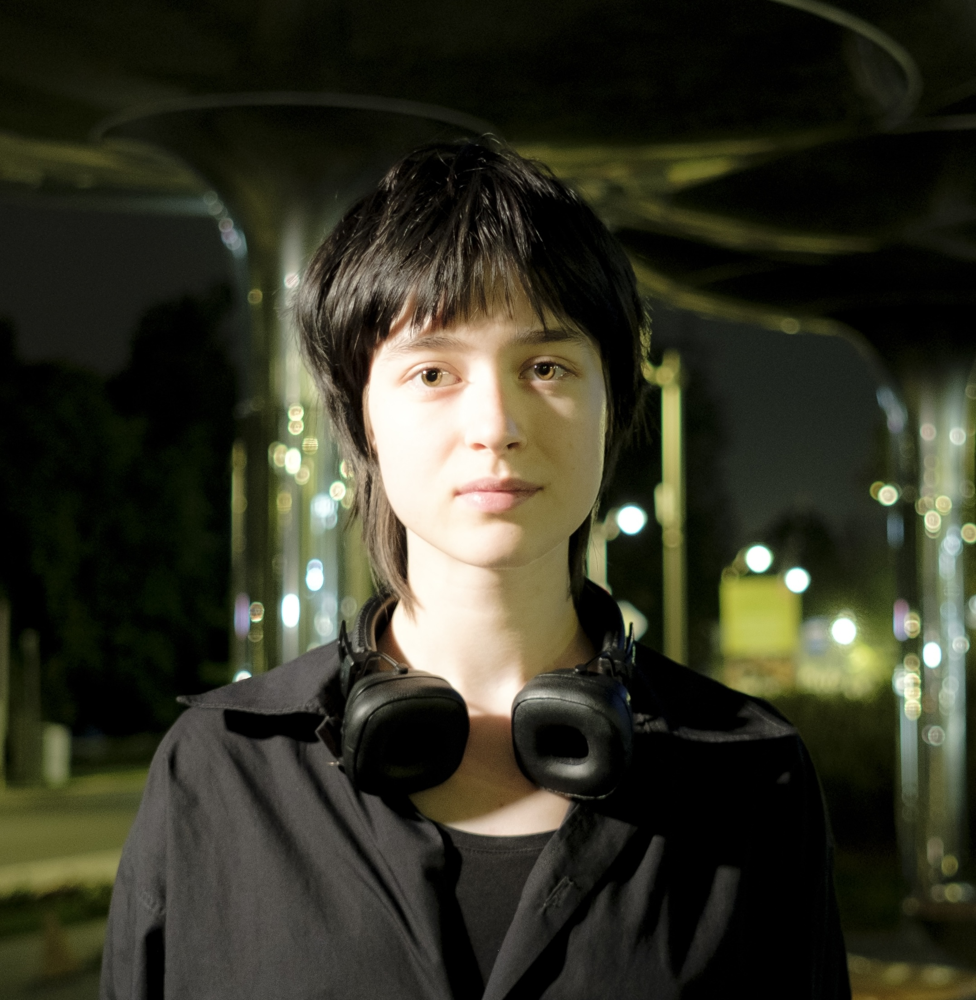
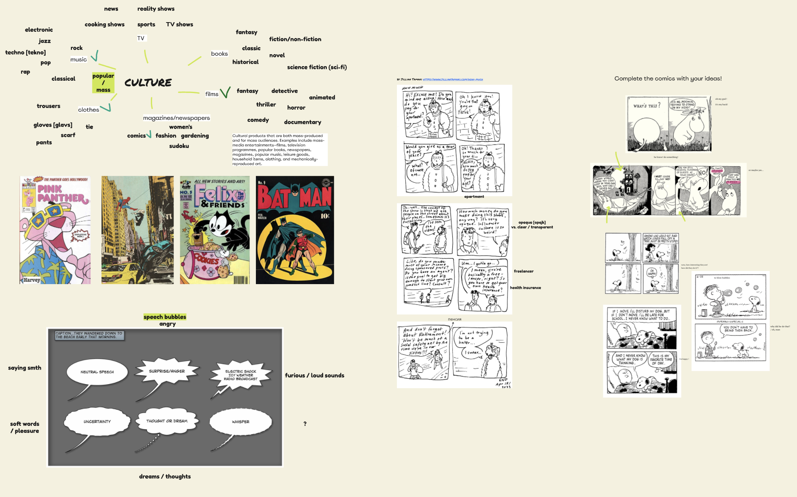
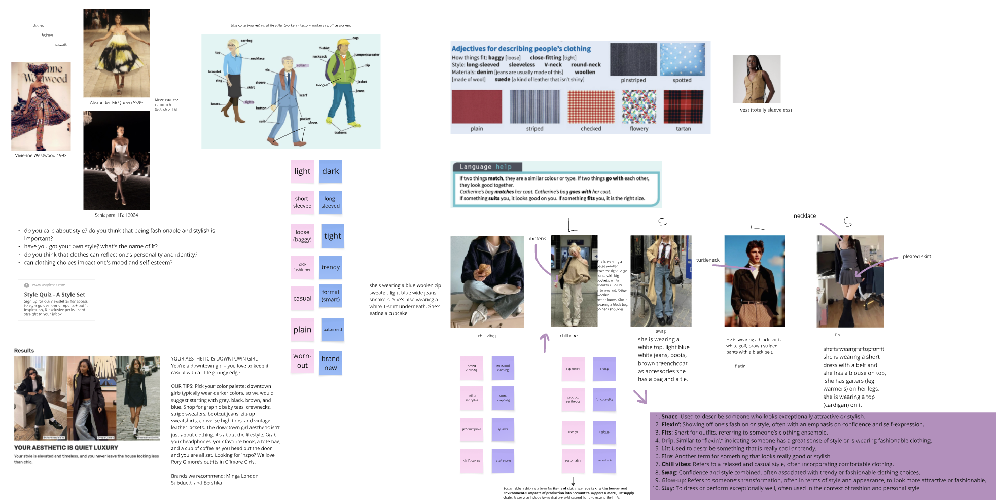
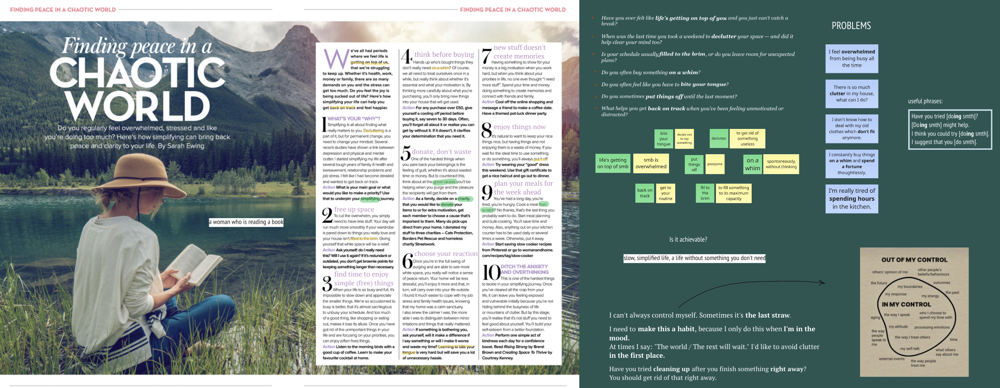
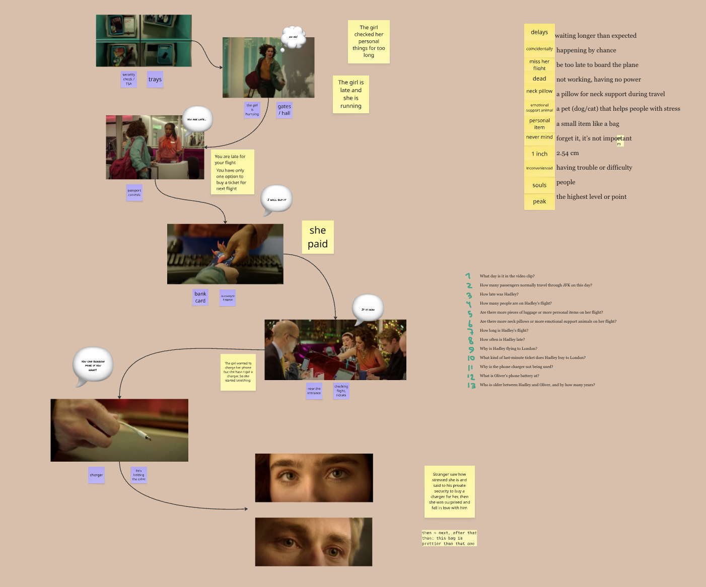

Привет, я Каролина!
Я преподаватель английского языка для подростков и взрослых. По образованию я теоретический лингвист, а еще я говорю на шести иностранных языках. На этом сайте я собрала всю важную информацию о своих занятиях.
Обо мне
Я начала говорить по-английски в пять лет и с тех пор не расставалась с этим языком.
Помимо большой любви к английскому, у меня есть образование теоретического лингвиста (НИУ ВШЭ '25). Это позволяет мне помочь ученикам увидеть структуру и логику языка – даже неправильные глаголы можно выстроить в систему!
Я большой фанат изучения языков в целом: я также говорю на японском, итальянском, латышском, польском и французском – так что я точно знаю, как учить языки эффективно и увлекательно, и обязательно научу этому вас. И конечно, это помогает мне понимать своих учеников лучше, так как я и сама каждый день сталкиваюсь с вызовами, связанными с изучением новых языков. За пять лет преподавательского опыта я выработала свой стиль подачи информации и организации уроков, но не останавливаюсь на этом и регулярно прохожу методические и языковые курсы. Например, "Урок с 0", "C чистого листа" и курс по методике преподавания РКИ во ВШЭ.
Об уроках
Занятия я готовлю как по учебникам, так и по современным аутентичным материалам. Например, мы изучаем грамматическую тему при помощи учебника, а затем закрепляем ее с помощью видео, подкастов, статей. Или наоборот, на основе аутентики изучаем грамматику и лексику, подкрепляя ее учебником. Материалы подбираются в соответствии с вашими интересами и целями.
На уроках я моделирую разные жизненные ситуации, каждую из которых ученики проживают и проговаривают на английском. Например, если мы обсуждаем путешествия, будьте уверены, что вы научитесь бронировать билеты и разбираться с попутными трудностями. А если вы все это уже давно умеете, приглашаю вас на философские дебаты :)
Занятия проходят на платформе Zoom с использованием интерактивной онлайн-доски Miro и организатора файлов Notion.
Вот некоторые примеры того, как это выглядит:




Стоимость уроков
Индивидуальные уроки:
- Урок 60 минут – 20 евро / 2000 рублей
- Урок 30 минут – 12 евро / 1200 рублей
Длительность уроков и их частота подбираются в соответствии с вашим запросом. Можно работать в паре, цену обсудим.
Для кого мои уроки
Я преподаю подросткам от пятнадцати лет и взрослым с уровнем от начального до C1. Мы наверняка сойдемся, если вам нравится не просто изучать язык, а вместе с тем расширять свой кругозор, прокачивать свои навыки презентации и письма, повышать уверенность в себе и учиться новому с удовольствием!
Я преподаю общий английский, а также работаю с индивидуальными запросами – об этом читайте ниже. Например, я могу помочь в подготовке к путешествию или рабочему собеседованию.
Об индивидуальном подходе
Я использую индивидуальный подход во всем, что касается изучения английского. Вот некоторые вещи, которые я гарантирую:
- В начале нашей работы я высылаю вам небольшую анкету, чтобы узнать немного о вас, ваших целях и опыте. Далее мы созваниваемся на ~30 минут, чтобы обсудить ваши интересы, мотивацию и составить предварительный план курса. Такая первичная диагностика помогает мне примерно спланировать наши занятия на ближайшие пару месяцев, чтобы вы видели структуру и знали, чего ожидать от наших занятий.
- Все занятия я готовлю персонально. Это позволяет мне учитывать интересы, тип восприятия, сильные и слабые стороны каждого студента.
- Если вы устали или приболели, но все равно хотите позаниматься, я позабочусь о том, чтобы занятие было менее сложным, но все таким же вовлекающим и полезным.
- Ваши цели, загружеcнность и мотивация могут меняться со временем – это нормально. Поэтому каждые 2-3 месяца я собираю фидбек, чтобы при необходимости подредактировать наш курс.
- Если вам хочется вместе разобрать интересующие фильм, песню, статью на английском – сообщите мне, и я подготовлю урок по этой теме!
И конечно, вы можете рассчитывать, что на наших уроках вы будете себя чувствовать комфортно и безопасно. Занятие – это время, которое вы уделяете своему росту, и я стараюсь сделать его максимально полезным и приятным. Это мотивирует и помогает побороть языковой барьер.
Языковое сопровождение / асинхронный английский
Если вы хотите больше автономности в изучении языка, этот вариант может вам подойти!
Как это работает: каждую неделю я высылаю вам предзаписанные короткие видеоуроки (либо небольшие рабочие тетрадки) по нескольким темам и задания к ним. В течение недели вы самостоятельно прослушиваете уроки и выполняете задания. В конце недели мы созваниваемся на разговорный урок выбранной длительности, чтобы закрепить полученные знания в действии.
Кому это подходит:
- Тем, кто хочет в своем темпе изучать материал;
- Тем, кто предпочитает изучать теорию самостоятельно (например, если вы чувствуете, что схватываете материал лучше, если сами разбираетесь);
- Тем, у кого нет возможности заниматься дважды в неделю, но хочется более быстрый результат, чем при занятиях один раз в неделю.
Этот формат также отлично подходит для экспресс-подготовки к языковым экзаменам – на мой взгляд, если фокусироваться только на типовых заданиях, не всегда эффективно тратить на них время на занятиях.
Контакты
Вы можете написать мне в Telegram или заполнить форму ниже.